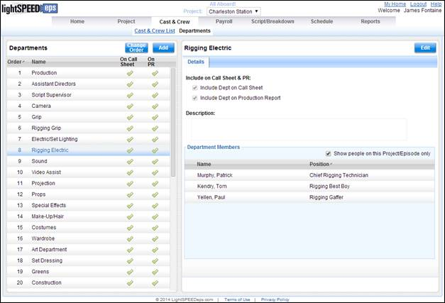
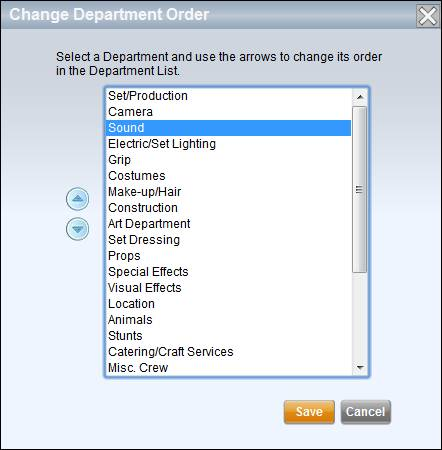
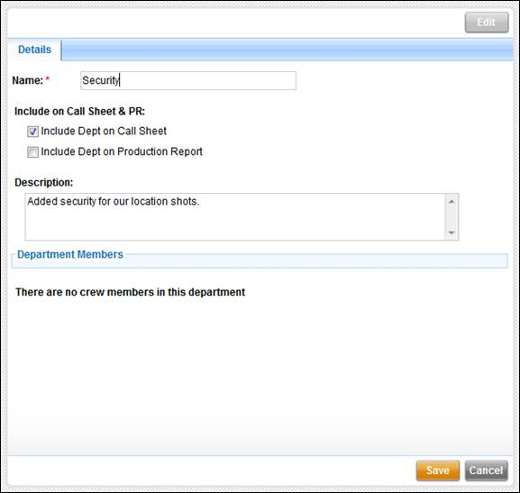

The
Departments screen displays the list of departments for the production. Use this screen to manage your department
list as well as view department members and determine which departments should
appear automatically on call sheets and production reports.
Departments

There are two types of departments - Standard and Custom.
· Standard departments are those that each production starts with, such as Camera, Location, and Props. There are 40 standard departments in Lightspeed.
· Custom departments are those that are created by users within the production.
The department list contains the following information:
· Order: The order in which the departments appear on reports and call sheets.
· Name: The name of the department.
· On Call Sheet: Whether or not the department should appear on the call sheet automatically.
· On PR: Whether or not the department should appear on the production report automatically.
The order of departments can be changed using the Change Order button above the department list. Click on this button to bring up the Change Department Order popup window.
Change Department Order

Select a department from the list and use the up and down arrow buttons on the left to reposition the department in the list.
Click on the Add button above the department list to create a new custom department. Enter the name and details of the new department on the right side of the screen.
Adding a Custom Department

The department detail screen is displayed on the right side and shows call sheet & production report options, a description, and department membership for the selected department.
Edit department details, such as the name and description, using the Edit button in the upper right. Click Save to save your changes.
Note: Standard departments may not be renamed.
Departments may be deleted under the following circumstances:
· The department is a Custom department.
· The department does not contain any members.
Delete a department using the Delete button in the upper right corner of the screen.
Related Topics